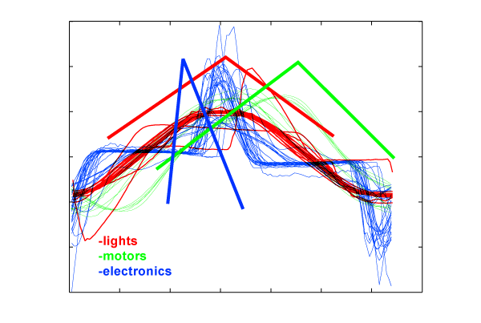
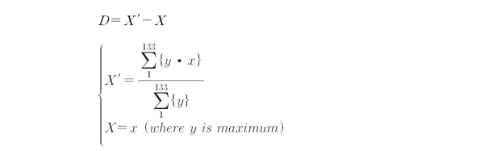
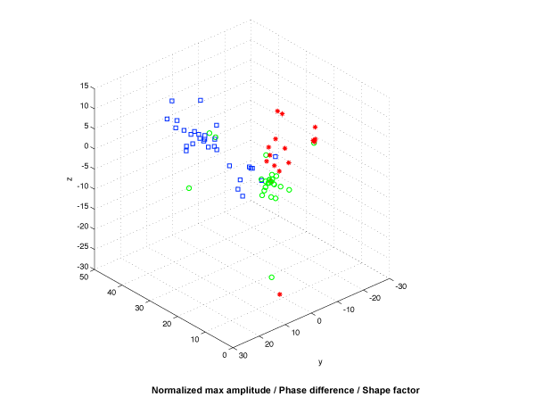

Time domain features: Shape
The shape of a wave was also a good discriminator for signal classification. As in Figure 1 we could see that class 'lamps' had a symmetric shape whereas 'motors' and 'electronics' tend to have either leaning forward or leaning backward shape.
Figure 1: Current divided by area of signal: 
We could represent the factor of slope by 
Using 3 features, we plotted a 3d distribution graph of 3 classes. Using KNN classification, we got 85% accuracy in cross validation. We used this value as a baseline of evaluating other feature's performances.
Figure 2: Current divided by area of signal: 